¡Atrápalos con la Pokébola Perfecta!
Las Pokébolas son herramientas esenciales en el mundo Pokémon. Cada una tiene características únicas que facilitan la captura de diferentes tipos de Pokémon según la situación. Elegir la Pokébola adecuada puede marcar la diferencia entre una captura exitosa y dejar escapar a un Pokémon.Las Pokébolas son el símbolo de todo entrenador Pokémon. Aunque todas sirven para capturar Pokémon, cada una posee habilidades especiales que las hacen ideales para distintas situaciones. Conocer sus características te permitirá elegir la mejor opción en cada aventura y convertirte en un gran entrenador.
Poké Ball
La Pokébola estándar utilizada por la mayoría de los entrenadores. Tiene una tasa de captura normal y es ideal para Pokémon comunes o de bajo nivel.
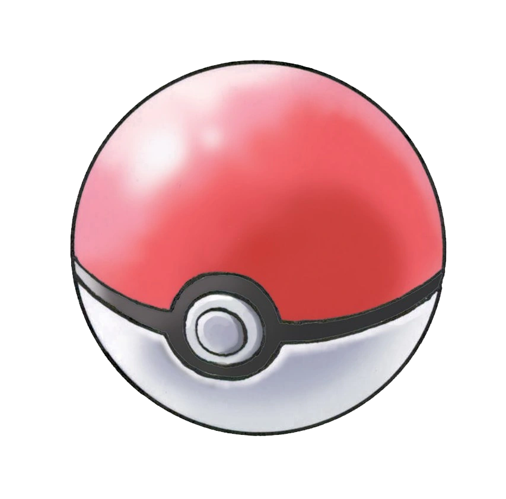
Great Ball
Ofrece una mayor probabilidad de captura que la Poké Ball. Es útil para Pokémon más fuertes o difíciles de atrapar.
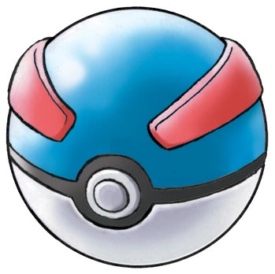
Ultra Ball
Una de las Pokébolas más eficaces. Está diseñada para capturar Pokémon de alto nivel o con una baja probabilidad de captura.
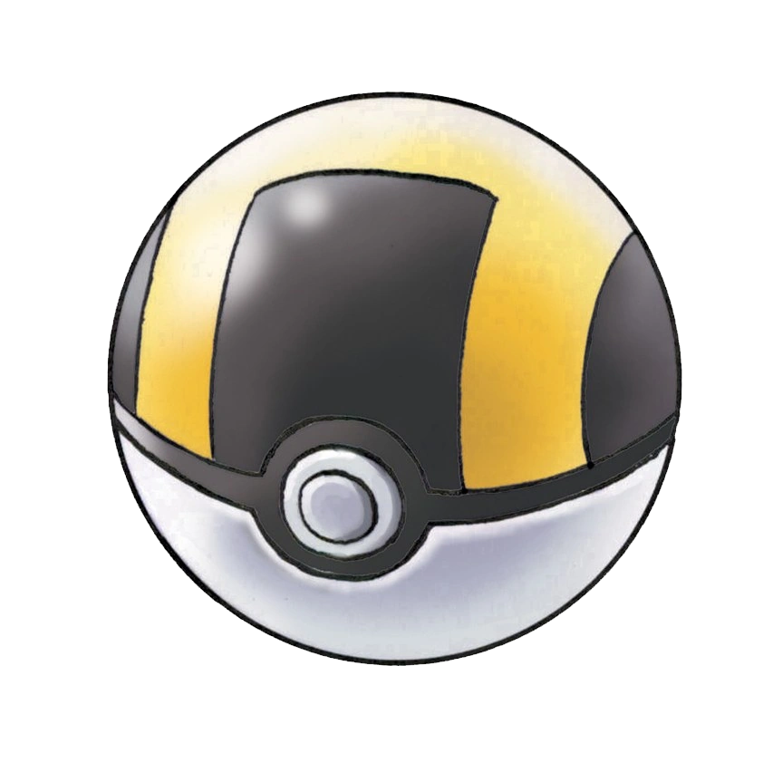
Master Ball
La Pokébola más poderosa de todas. Garantiza la captura de cualquier Pokémon sin importar su nivel o estado.
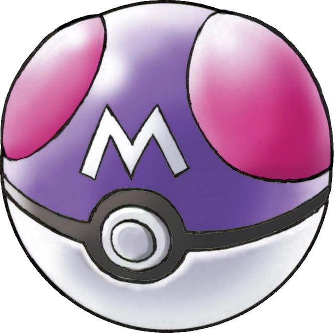
Safari Ball
Se utiliza exclusivamente en las Zonas Safari. Su funcionamiento es similar al de una Poké Ball, pero solo puede usarse en esas áreas.
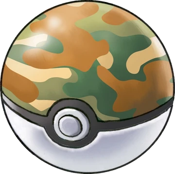
Level Ball
Aumenta su efectividad si el Pokémon del entrenador tiene un nivel superior al del Pokémon salvaje.
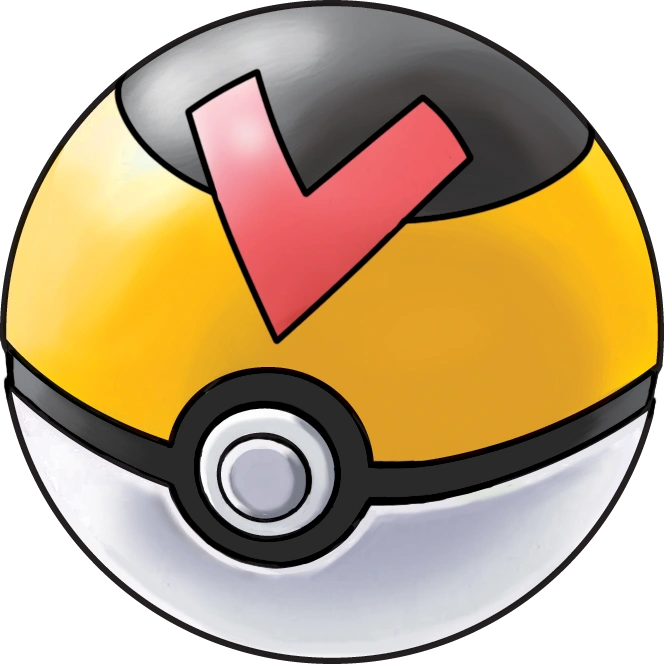
Lure Ball
Es más efectiva para capturar Pokémon encontrados mientras se pesca.
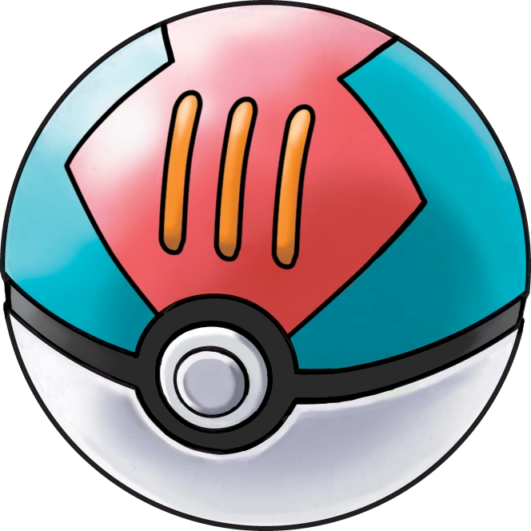
Moon Ball
Tiene una mayor probabilidad de capturar Pokémon que evolucionan mediante una Piedra Lunar.

Friend Ball
Los Pokémon capturados con esta Pokébola comienzan con un alto nivel de amistad hacia su entrenador.
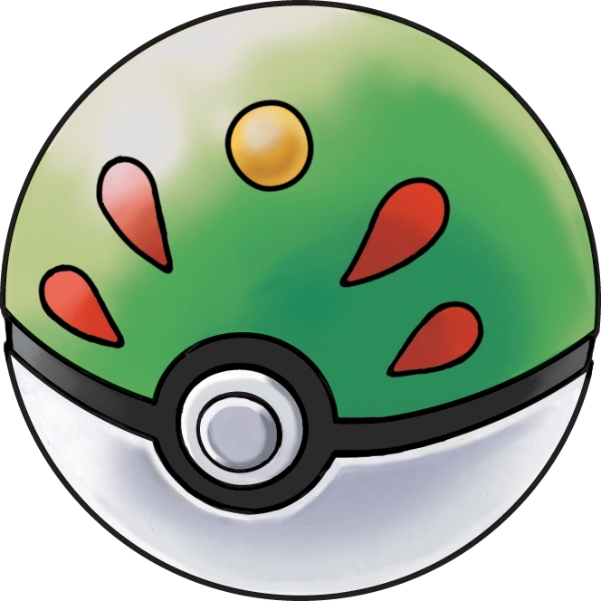
Love Ball
Es más efectiva si el Pokémon salvaje es de la misma especie que el del entrenador, pero de sexo opuesto.
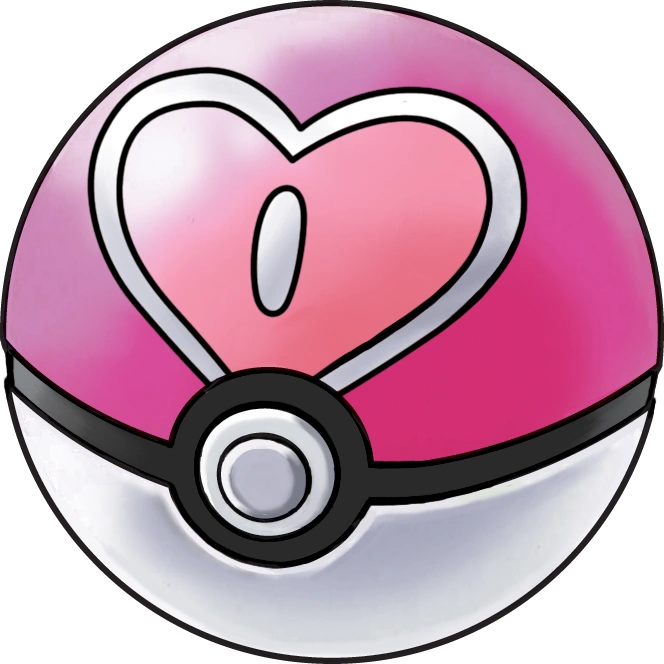
Heavy Ball
Funciona mejor con Pokémon de gran peso. Cuanto más pesado sea el Pokémon, mayor será la probabilidad de captura.
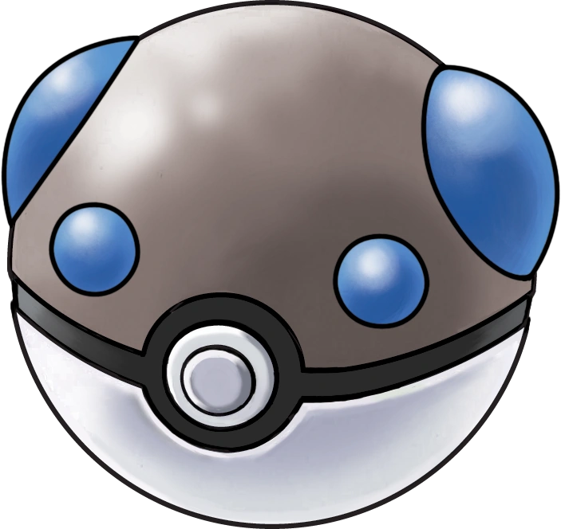
Fast Ball
Es especialmente útil para capturar Pokémon que poseen una gran velocidad o que suelen huir.
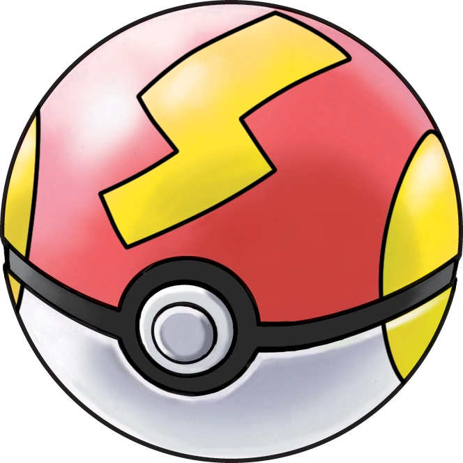
Sport Ball
Se utilizaba en el Concurso de Captura de Bichos. Su efectividad es similar a la de una Poké Ball.
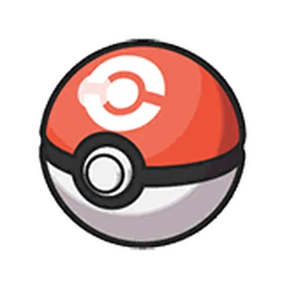
Premier Ball
Se obtiene como regalo al comprar varias Pokébolas. Tiene la misma eficacia que una Poké Ball estándar.
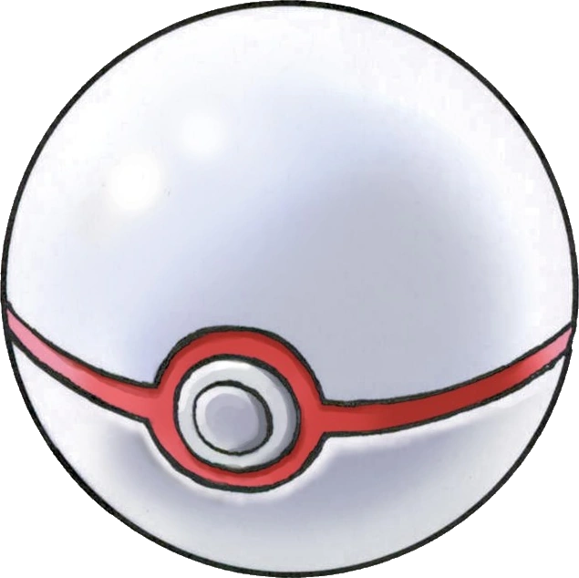
Repeat Ball
Aumenta las probabilidades de capturar un Pokémon que ya está registrado en la Pokédex del entrenador.
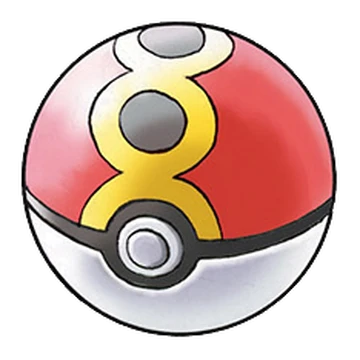
Timer Ball
Su efectividad aumenta conforme pasan más turnos durante el combate.
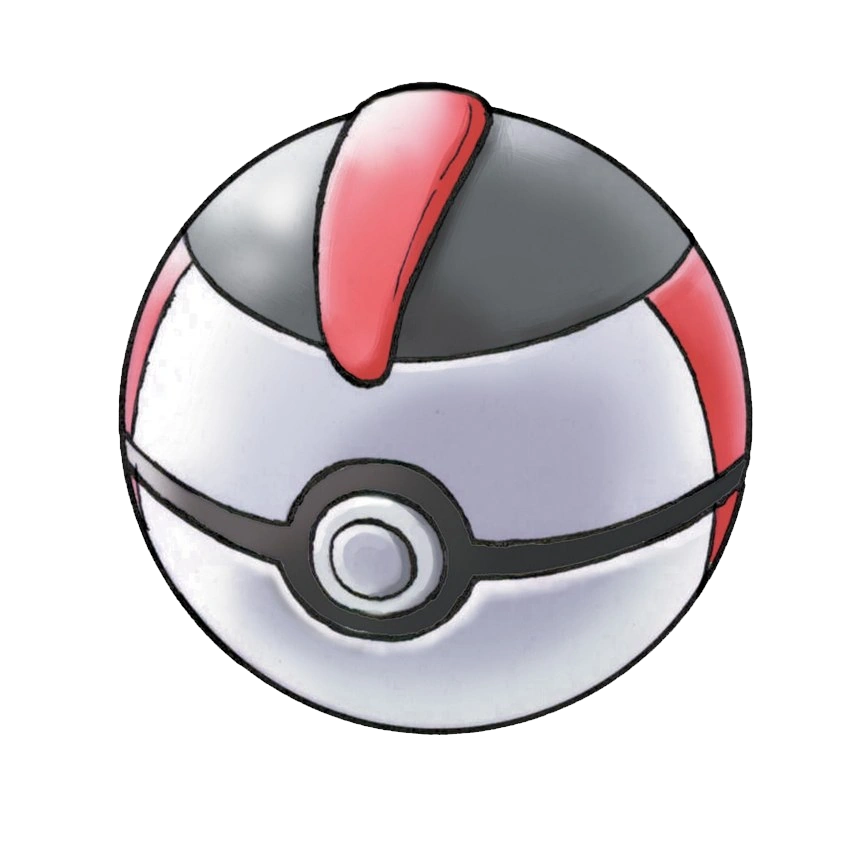
Nest Ball
Es más eficaz contra Pokémon de nivel bajo.
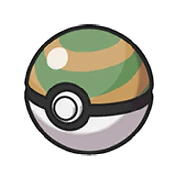
Net Ball
Está diseñada para capturar Pokémon de tipo Agua y Bicho.
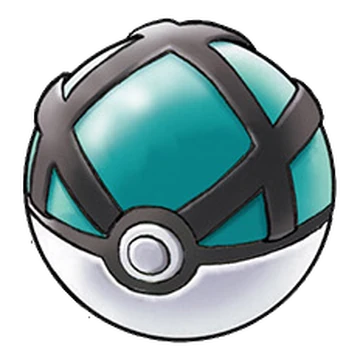
Dive Ball
Es más efectiva para capturar Pokémon que viven bajo el agua o que se encuentran mientras se practica buceo.
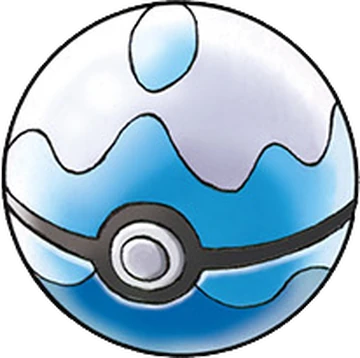
Luxury Ball
Incrementa la amistad del Pokémon capturado más rápidamente.
Heal Ball
Restaura completamente la salud y elimina los problemas de estado del Pokémon justo después de capturarlo.
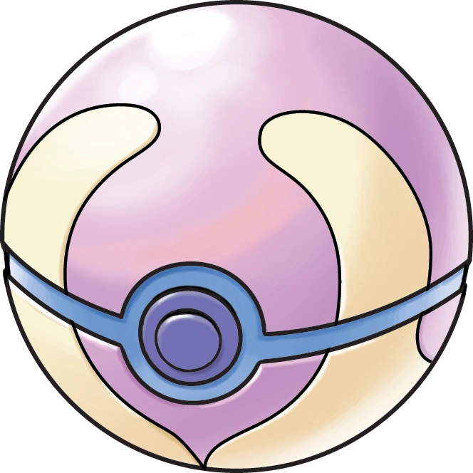
Quick Ball
Tiene una alta probabilidad de éxito si se lanza en el primer turno del combate.
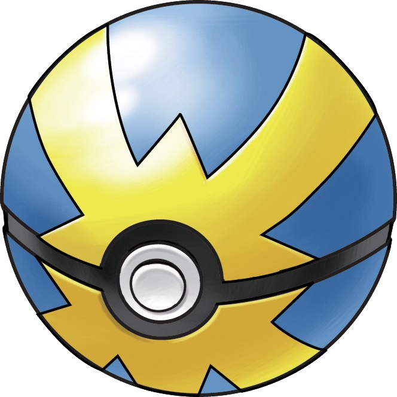
Dusk Ball
Es muy efectiva durante la noche o en cuevas y lugares oscuros.
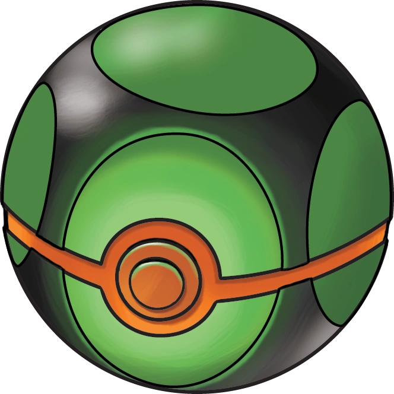
Cherish Ball
Una Pokébola muy especial que solo se utiliza para distribuir Pokémon de eventos oficiales. No puede conseguirse de forma normal.
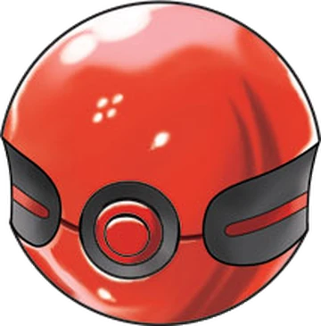
Park Ball
Se utilizaba en el Parque Compi para transferir Pokémon desde juegos anteriores. Garantiza la captura durante ese proceso.
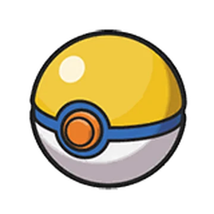
Dream Ball
Originalmente servía para capturar Pokémon que aparecían en el Mundo de los Sueños. En juegos recientes es muy efectiva contra Pokémon dormidos.
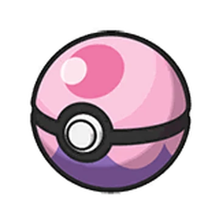
Beast Ball
Fue creada especialmente para capturar Ultraentes. Contra ellos es extremadamente eficaz, pero resulta poco efectiva con los demás Pokémon.
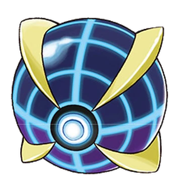